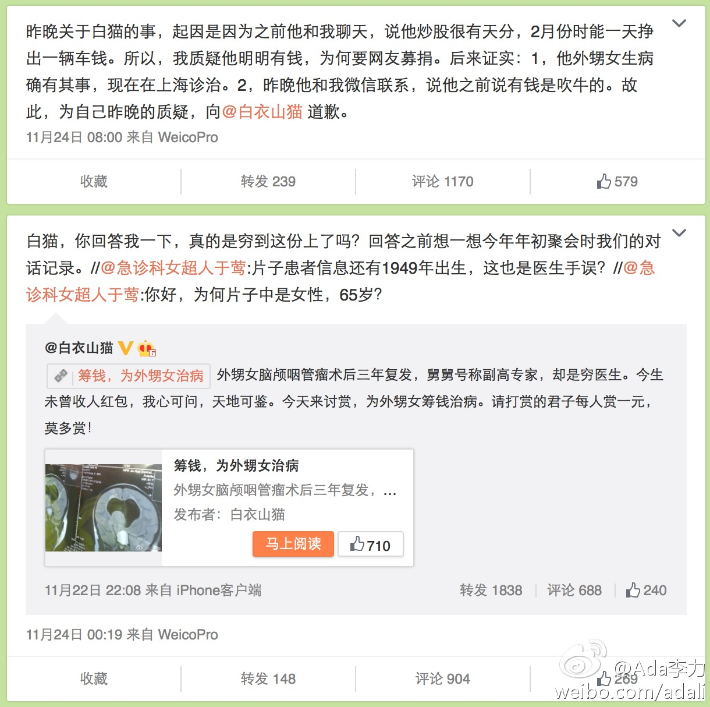

最近整理很长时间没有打理的股票基金账户，发现有的涨得好，有的是几年都是亏损状态。然后想到一个问题，需要资金的时候，是卖掉涨得好得那个，还是亏损的那个。－ 理智的做法，应该是卖掉亏损的那个。但我还是发现自己潜意识里有卖掉涨得好那个，因为这个动作给你赚了钱的感觉。
道理容易想通，比如公司里有能干的人，和不能干的人。把活交给不能干的人，总是完成不了或者完成不好，多数人就直接把活儿派给能干的人，然后给不能干的人安排些容易的。－ 其实理智的做法是，炒了不能干的，把不能干的那份工资，当奖金发给能干的。说白了，就是马太效应。@Ada李力:最近整理很长时间没有打理的股票基金账户，发现有的涨得好，有的是几年都是亏损状态。然后想到一个问题，需要资金的时候，是卖掉涨得好得那个，还是亏损的那个。－ 理智的做法，应该是卖掉亏损的那个。但我还是发现自己潜意识里有卖掉涨得好那个，因为这个动作给你赚了钱的感觉。
看你的说法，就知道是个散户。//@_nearly转1: 当然是卖了涨的不错的，因为不知道下一秒是不是涨的不错会变成跌的不错。@Ada李力:最近整理很长时间没有打理的股票基金账户，发现有的涨得好，有的是几年都是亏损状态。然后想到一个问题，需要资金的时候，是卖掉涨得好得那个，还是亏损的那个。－ 理智的做法，应该是卖掉亏损的那个。但我还是发现自己潜意识里有卖掉涨得好那个，因为这个动作给你赚了钱的感觉。
我也曾炒过股，在2006年到2009年做了一波过山车，亏损数额就不说了，给我的教训就是这是个专业的事情，需要时间精力和金钱来交学费。只是业余玩玩的人，大多数结果是被市场上专业选手和大鳄痛宰，所以就不玩了。
我自己买的股票没赚到钱，收益都来自基金，而且收益率最好的来自一个定投时间比较长的基金，因为是给女儿做的定投，从2006年开始一直没有间断，收益率已经超过120%了。所以，把时间当朋友，并且坚持，会有意想不到的收获。@Ada李力:我也曾炒过股，在2006年到2009年做了一波过山车，亏损数额就不说了，给我的教训就是这是个专业的事情，需要时间精力和金钱来交学费。只是业余玩玩的人，大多数结果是被市场上专业选手和大鳄痛宰，所以就不玩了。
#姣姣#是我们家的环保小卫士，喊她来吃晚饭，她进厨房的第一件事儿是关了料理台上的壁灯，然后去关了抽油烟机。我吃完饭先去客厅，发现她把客厅的灯也关了。 我喜欢屋里到处都亮堂堂的，所以对闺女这个"随手关"的习惯，现在有点儿说不上是喜欢还是不喜欢。
【纠结的大夫们，向于莺学学吧。】因为创业属于医疗美容领域，所以微博上关注了很多医生。微博上吵架的人很多，医生们也不例外，而且辩论中还要夹杂很多专业知识，所以围观也仅是围观而已，不会发表什么围观者看法。不过这次@急诊科女超人于莺和@白衣山猫（浙江援疆副… 网页链接 
回复@黄岩蜜桔:不要跟业余人士学东西，我也不会推荐股票基金什么的，即使是我我自己买的。如果想找专业的人，去雪球网和牛仔网看看。 //@黄岩蜜桔:ada,能说下是那个基金吗，我也去跟投。@Ada李力:我也曾炒过股，在2006年到2009年做了一波过山车，亏损数额就不说了，给我的教训就是这是个专业的事情，需要时间精力和金钱来交学费。只是业余玩玩的人，大多数结果是被市场上专业选手和大鳄痛宰，所以就不玩了。
回复@整形记: //@整形记:这个回复是从整形记网站上发出的。看看能不能返回到Sina微博上。 (来自 网页链接 )@Ada李力:测试个很有意思的新功能，微博上问专家的发言可以抓回到社区上了，自动邀请社区上的专家回答。@整形记
回复@急诊科女超人于莺:很能理解这种想法。//@急诊科女超人于莺:昨晚我和一位友人的一句话作为结束语，借钱是一种契约，要还；募捐，是伸手要钱，不用还。有手有脚有正当职业，不选择契约，选择伸手要钱。我只能无语了。@Ada李力:【纠结的大夫们，向于莺学学吧。】因为创业属于医疗美容领域，所以微博上关注了很多医生。微博上吵架的人很多，医生们也不例外，而且辩论中还要夹杂很多专业知识，所以围观也仅是围观而已，不会发表什么围观者看法。不过这次@急诊科女超人于莺和@白衣山猫（浙江援疆副… 网页链接
 网页链接
网页链接